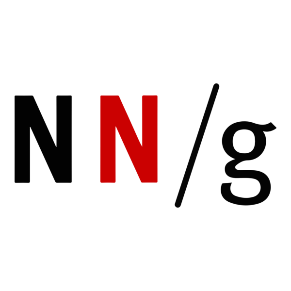
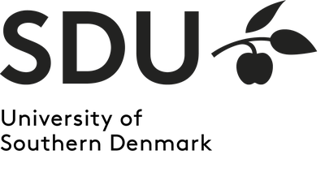
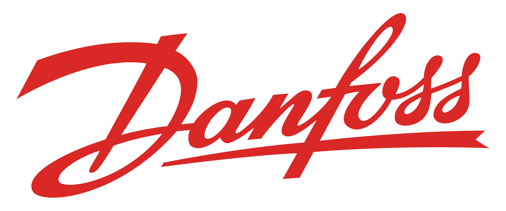
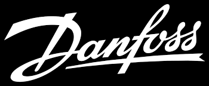

7+
years of work experience
SENIOR PRODUCT DESIGNER
I'm a Senior Product Designer who turns Complexity into Clear Experiences
7+
years of work experience

Certified
14
completed projects
Graduated a MSc in IT Product Design at the University of Southern Denmark
A snapshot of how I partner with teams: gathering feedback from users, defining problems, shaping flows and components, and polishing interfaces so products feel clear, consistent and easy to navigate.
I'm using AI as a partner but I keep the human touch in products to ensure they are not just technically sound but also fixing new problems for real users.
See full CVTokens, components, and Storybook documentation for a consistent product surface across teams.
Research-led intranet redesign for a large university. Clearer structure, navigation, and interfaces shaped by staff and student needs.
Marketing site and webshop experience for an EdTech startup. Clear storytelling, product discovery, and a purchase flow parents can trust.
Designing modern interfaces, reusable components, and documentation so products stay consistent as teams and features scale.
Combining interviews, usability testing, and clear writing so journeys feel obvious, trustworthy, and grounded in real user behavior.
Building and shipping interfaces in code, and using AI tools to move faster on exploration, documentation, and delivery without dropping quality.
Keeping design and delivery aligned through planning, stakeholder workshops, and a lean process so the work has measurable impact and teams know what shipped and why.
Building visual identities, social assets, and marketing graphics that strengthen brand recognition across channels.
Setting up welcome sequences, newsletters, and lifecycle emails with clear copy and timing so people hear from you at the right moment, not all at once.







A little fun
Inflate until it pops. Contact details are waiting underneath.